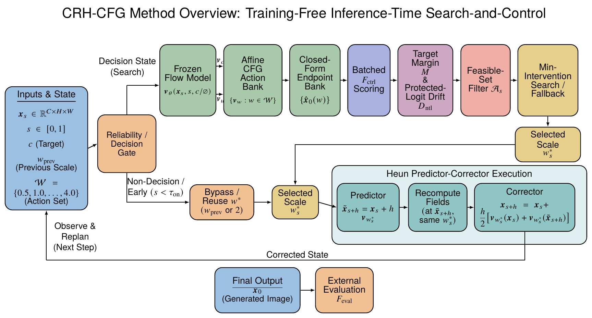

Diffusion, Flow Matching, and CRH-CFG
I independently completed the publicly available coursework and assignments from CMU 10-799, Diffusion and Flow Matching.

- Implemented
- DDPM, straight-path Flow Matching, DDIM, Euler and Heun samplers, and conditional classifier-free guidance.
- Experiment setting
- CelebA 64×64; Modal L40S; independent ResNet-18 evaluator.
- Abstract
- Classifier-free guidance (CFG) usually uses a fixed scale and cannot respond to sample-specific generation states. We ask whether a frozen conditional-unconditional field pair can instead support online adaptation without additional generator evaluations. We introduce Constraint-aware Receding-Horizon Classifier-Free Guidance (CRH-CFG), a constrained receding-horizon search over scalar CFG actions. The search proceeds in three stages. First, it affinely reuses the field pair to construct candidate velocities and closed-form clean-endpoint estimates. Second, a frozen evaluator scores these endpoints; target-margin and protected-logit-drift constraints define the feasible set, within which the algorithm selects the action closest to ordinary conditioning and the previous choice, with a fallback when none is feasible. Third, it executes the selected action for one Heun macro-step, recomputes fields at the predicted state, and searches again after correction. This training-free search adds evaluator work but no additional generator evaluations and retains the original Heun discretization. CelebA experiments show modest adherence improvement at low overhead, while preservation and conditional quality gains remain unsupported.
Engineering disclosure: Codex assisted engineering; I retained research design, interpretation, and validation.